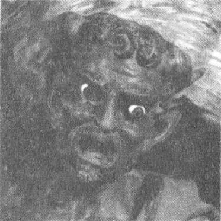

"Şu yazı TERRIBILIS EST LOCUS İTE Rennes-le-Château'yu saran komplo teorilerinin başka bir nedeni. Aslında bu cümlenin anlamı 'Bıı mekân huşıı verir', çünkü terribilis sözcüğü çağdaş
terrible (dehşet verici) sözcüğünden çok Eski Ahit'te geçtiği gibi kullanılmış. Ama nasıl yorumlandığını tahmin edebilirsin."
Berbat müziği ve sözde "Rennes-le-Château gizemlerine" bir gönderme olan "hazine sizsiniz" nasihatiyle, yeniden dine döndürülmüş kilise kapısının üzerinde bu yazıyı hâlâ okuyabilirsiniz. Yakındaki Meryem Ana heykeli görünüşe göre bir Vizigot sütununun üzerine yerleştirilmiş. Belki de Sauniere taşın içindeki boşlukta aradığı hazineleri ya da parşömenleri bulmuştu. Sütunun üstüne iki Vizigot sonrası mesajı kazılı: " Penitence, Peııitence" ve "Mission 1891." Meredith'in aklından geçtiği gibi "Yine bu tarih..."
667

Kate Mosse